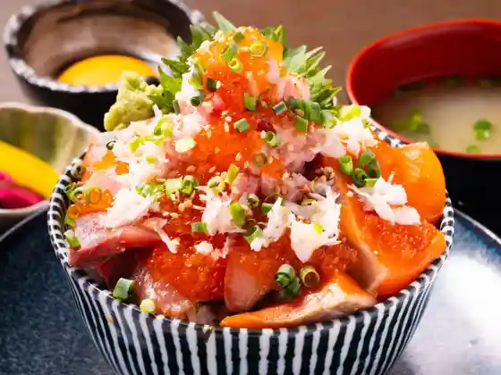
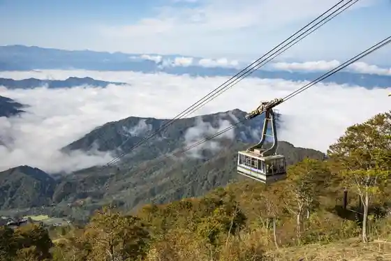
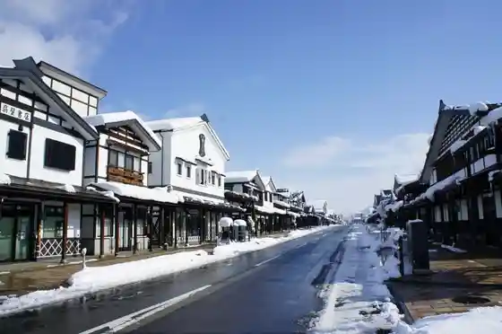
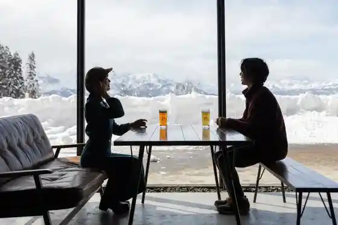

Minamiuonuma, Honki Domburi (Maji Domburi)
Minamiuonuma, Niigata · 025-783-3377 · Official / source link

Hakkaisan Ropue Hakkaisan Lookout
Minamiuonuma, Niigata · 025-775-3311 · Official / source link

Mikuni Kaido Shiozawa Yado Bokushi Tori
Minamiuonuma, Niigata · 025-782-1206 · Official / source link

Uonuma Village
Minamiuonuma, Niigata · 025-775-7707 · Official / source link

Roadside Station Minamiuonuma (Yuki Akari) (Kokudo 17 Go)
Minamiuonuma, Niigata · 025-783-4500 · Official / source link
Kan Ki Sanroku Campground
Minamiuonuma, Niigata · 025-782-0924 · Official / source link
Hakkai Shrine
Minamiuonuma, Niigata · 025-775-2693 · Official / source link
Hakkaisan
Minamiuonuma, Niigata · 025-773-6665 · Official / source link
Kan Ki Yama Shimizu Tozanguchi
Minamiuonuma, Niigata · 025-773-6665 · Official / source link
Ishigami Shrine
Minamiuonuma, Niigata · 025-773-6665 · Official / source link
Ue no Hara Campground
Minamiuonuma, Niigata · 025-773-6279 · Official / source link
Tsumugi Tori (Keitora City)
Minamiuonuma, Niigata · 025-782-1206 · Official / source link
Raiden Sama no Mizu (Raidensama no Mizu)
Minamiuonuma, Niigata · 025-773-6665 · Official / source link
Budo Shukakusai to Wain Festival
Minamiuonuma, Niigata · 025-777-5877 · Official / source link
Muika Town Onsen
Minamiuonuma, Niigata · 025-788-1703 · Official / source link
Iono Village
Minamiuonuma, Niigata · 025-783-6788 · Official / source link
Za Veranda Ishiuchi Maruyama
Minamiuonuma, Niigata · 025-783-2222 · Official / source link
Ryukoku Tera
Minamiuonuma, Niigata · 025-779-2020 · Official / source link
Hakkaisan Mikoto Shrine
Minamiuonuma, Niigata · 025-779-2010 · Official / source link
Hatsuka Ishi Onsen Ishiuchi Yunguparunasu
Minamiuonuma, Niigata · 025-783-7888 · Official / source link
Kan Kyo Tera
Minamiuonuma, Niigata · 025-783-2111 · Official / source link
Agurikoa Echigo Wainarii
Minamiuonuma, Niigata · 025-777-5877 · Official / source link
Kumo Hora Iori
Minamiuonuma, Niigata · 025-782-0520 · Official / source link
Unkai Kansho Ropue / Muika Town Hakkaisan Ski Area
Minamiuonuma, Niigata · 025-775-3311 · Official / source link
Ura Kan Ki Gorge
Minamiuonuma, Niigata · 025-774-2142 · Official / source link
Uonuma Sukai Line (Minamiuonuma)
Minamiuonuma, Niigata · 025-783-3377 · Official / source link
Imaizumi Memorial Museum Atosuteshon
Minamiuonuma, Niigata · 025-783-4500 · Official / source link
Osaki Damu Koen Campground
Minamiuonuma, Niigata · 025-773-6665 · Official / source link
Uonuma Kikka Ten Urasa Kiku Festival
Minamiuonuma, Niigata · 025-777-3054 · Official / source link
Noborikawa River Park
Minamiuonuma, Niigata · 025-783-3377 · Official / source link
Urasa Onsen
Minamiuonuma, Niigata · 025-777-3054 · Official / source link
Sakato Yama
Minamiuonuma, Niigata · 025-788-1703 · Official / source link
Bishamon Do (Kichijo Yama Fuko Tera)
Minamiuonuma, Niigata · 025-777-2001 · Official / source link
Ishiuchi Maruyama Ski Area
Minamiuonuma, Niigata · 025-783-2222 · Official / source link
Sakato Castle Ruins
Minamiuonuma, Niigata · 025-773-3756 · Official / source link
Toyama Yasuo no no Hana Kan
Minamiuonuma, Niigata · 025-783-7787 · Official / source link
Minamiuonuma Rafuteingu
Minamiuonuma, Niigata · 090-3145-0178 · Official / source link
Roku Banki Yama
Minamiuonuma, Niigata · 025-788-1703 · Official / source link
Mikuni Kaido Shiozawa Yado Musha Ningyo Kazari
Minamiuonuma, Niigata · 090-7244-2353 · Official / source link
Osaki Takiya no Mizu (Osakitakiya no Mizu)
Minamiuonuma, Niigata · 025-773-6665 · Official / source link
Goju Sawa Campground
Minamiuonuma, Niigata · 025-774-2142 · Official / source link
Maiko Onsen Meshi Samurai Baths
Minamiuonuma, Niigata · 025-783-3511 · Official / source link
Mikuni Kaido Shiozawa Yado Hina Yukimi Kazari
Minamiuonuma, Niigata · 090-7244-2353 · Official / source link
Hakkaisan Lookout
Minamiuonuma, Niigata · 025-775-3311 · Official / source link
Minamiuonuma Tomiokahowaito Art Museum
Minamiuonuma, Niigata · 025-775-3646 · Official / source link
Sakato Yama Sakato Tozanguchi
Minamiuonuma, Niigata · 025-773-6665 · Official / source link
Maiko Su no Resort
Minamiuonuma, Niigata · 025-783-4100 · Official / source link
Hachi Iro no Mori Park
Minamiuonuma, Niigata · 025-780-4560 · Official / source link
Tango Yama
Minamiuonuma, Niigata · 025-774-2200 · Official / source link
Sen Fuchi Park
Minamiuonuma, Niigata · 025-773-6665 · Official / source link
Kan Shugyo Setsubun Matsuri
Minamiuonuma, Niigata · 025-779-2010 · Official / source link
Uonuma Sukai Line Hachi Ka Miharashi Dai
Minamiuonuma, Niigata · 025-783-3377 · Official / source link
Shiki Ajiwa I Kan
Minamiuonuma, Niigata · 025-783-3983 · Official / source link
Hon Tera
Minamiuonuma, Niigata · 025-775-2626 · Official / source link
Ikeda Kinen Art Museum
Minamiuonuma, Niigata · 025-780-4080 · Official / source link
Itsuka Town Amachi Kyoiku Guriin Campground
Minamiuonuma, Niigata · 025-776-2032 · Official / source link
Kan Ki Yama
Minamiuonuma, Niigata · 025-773-6665 · Official / source link
Sen Fuchi Park Kan'o Kai
Minamiuonuma, Niigata · 025-788-1703 · Official / source link
Minamiuonuma De Unkai Wo Tanoshi Mo
Minamiuonuma, Niigata · 025-783-3377 · Official / source link
Shato Shiozawa Ski Area
Minamiuonuma, Niigata · 025-782-1191 · Official / source link
Suzuki Bokushi Memorial Museum
Minamiuonuma, Niigata · 025-782-9860 · Official / source link
O Matsu no Ike
Minamiuonuma, Niigata · 025-783-3377 · Official / source link
Kabasawa Castle Ruins
Minamiuonuma, Niigata · 025-783-3377 · Official / source link
Joetsukokusai Ski Area
Minamiuonuma, Niigata · 025-782-1028 · Official / source link
Ana Chi Juni Daimyojin
Minamiuonuma, Niigata · 025-783-3377 · Official / source link
Kaba Nozawa Onsen (Kabansawaonsen)
Minamiuonuma, Niigata · 025-782-1030 · Official / source link
Urasa Joshi
Minamiuonuma, Niigata · 025-773-3756 · Official / source link
Osawa Yama Onsen
Minamiuonuma, Niigata · 025-783-2579 · Official / source link
Uonuma Sukai Line Gokoku Kannon Lookout
Minamiuonuma, Niigata · 025-783-3377 · Official / source link
Osaki Damu Mizumi
Minamiuonuma, Niigata · 025-783-3377 · Official / source link
Muika Town Hakkaisan Ski Area
Minamiuonuma, Niigata · 025-775-3311 · Official / source link
Ue no Hara Park O Matsu no Ike
Minamiuonuma, Niigata · 025-788-1703 · Official / source link
Osaki Damu Park
Minamiuonuma, Niigata · 025-777-3054 · Official / source link
Hakkaisan Fumoto Ski Area
Minamiuonuma, Niigata · 025-779-3103 · Official / source link
Echigo Jofu
Minamiuonuma, Niigata · 025-782-1127 · Official / source link
Joetsukokusai Purei Land
Minamiuonuma, Niigata · 025-782-1141 · Official / source link
Iizuna Yama
Minamiuonuma, Niigata · 025-788-1703 · Official / source link
Ten Masa Tera
Minamiuonuma, Niigata · 025-782-0147 · Official / source link
Muikasu no Resort
Minamiuonuma, Niigata · 025-773-3311 · Official / source link
Ohara Sports Park
Minamiuonuma, Niigata · 025-783-3533 · Official / source link
Iizuna Yama Kofun Gun
Minamiuonuma, Niigata · 025-773-3756 · Official / source link
Roku Banki Castle Ruins
Minamiuonuma, Niigata · 025-773-3756 · Official / source link
Atoyama Buna Hayashi Park
Minamiuonuma, Niigata · 025-783-3377 · Official / source link
Ue no Hara Shobuen
Minamiuonuma, Niigata · 025-783-3377 · Official / source link
Kanryo Tsuka Shiseki Park
Minamiuonuma, Niigata · 025-773-3756 · Official / source link
Shiozawa Tsumugi Memorial Museum
Minamiuonuma, Niigata · 025-782-4888 · Official / source link
Naitoterasu Eigyo
Minamiuonuma, Niigata · 025-783-2222 · Official / source link
Yamato City Ski Area Junia Sukii Kyoshitsu
Minamiuonuma, Niigata · Official / source link
Itsuka Town Ski Area
Minamiuonuma, Niigata · 025-776-2132 · Official / source link
Ueno Kosen
Minamiuonuma, Niigata · 025-783-2174 · Official / source link
Nakajima Ie
Minamiuonuma, Niigata · 025-782-1116 · Official / source link
Jibun no Tede O Kome Wo Tsukuru ! Nippon Yusu no Kome Tokoro, Niigataken Uonuma De Taue Experience
Minamiuonuma, Niigata · 025-783-2171 · Official / source link
Goju Sawa Gorge
Minamiuonuma, Niigata · 025-774-2200 · Official / source link
Kimono Experience Mikuni Kaido Shiozawa Yado (Bokushi Tori) Sansaku
Minamiuonuma, Niigata · 080-9415-1501 · Official / source link
Yasai Shukaku Taiken Tokodawari Noka O Kome Kaitsuke Experience
Minamiuonuma, Niigata · 025-782-0537 · Official / source link
Roadside Station Minamiuonuma (Yuki Akari) to Shuhen Kanko
Minamiuonuma, Niigata · 025-783-3377 · Official / source link
Naka no Gaku
Minamiuonuma, Niigata · 025-774-2200 · Official / source link
Guriinshiizun
Minamiuonuma, Niigata · 025-783-4100 · Official / source link
Su no Mobiru Experience / Maiko Su no Resort
Minamiuonuma, Niigata · 025-211-4195 · Official / source link
Kongo Reisen (Kongoreisen)
Minamiuonuma, Niigata · 025-773-6665 · Official / source link
Kun Ki Kannon
Minamiuonuma, Niigata · 025-773-3756 · Official / source link
(O Kome no Machi) Uonuma Naradeha ! Mukashinatsuka Shi Mochi Tsuki Experience
Minamiuonuma, Niigata · 025-772-6800 · Official / source link
Setsujo Bananaboto / Maiko Su no Resort
Minamiuonuma, Niigata · 025-211-4195 · Official / source link
Ue no Hara Kogen Onsen
Minamiuonuma, Niigata · 025-788-1703 · Official / source link
Ueda no Sato
Minamiuonuma, Niigata · 025-782-1197 · Official / source link
Minamiuonuma Kirizai Domburi
Minamiuonuma, Niigata · 025-783-3377 · Official / source link
Meshi Samurai Yama
Minamiuonuma, Niigata · 025-773-6665 · Official / source link
Oguri Yama Sansupotsu Land
Minamiuonuma, Niigata · 025-772-7567 · Official / source link
Hakugin no Gerende Wo Sanpo ! Maiko Su no Resort Kosu
Minamiuonuma, Niigata · 025-783-4100 · Official / source link
Inaka Taiken Village Ueda no Sato
Minamiuonuma, Niigata · 025-782-1197 · Official / source link
Mikuni Kawa Damu Shakunage Mizumi
Minamiuonuma, Niigata · 025-774-2200 · Official / source link
Mikuni Kaido Shiozawa Yado (Bokushi Tori) no Sansaku
Minamiuonuma, Niigata · 025-783-3377 · Official / source link
Yukiguni A Kyu Gurume
Minamiuonuma, Niigata · 025-783-3377 · Official / source link
Minamiuonuma no Kumo Cho Sakuhin Wo Tankyu
Minamiuonuma, Niigata · 025-783-3377 · Official / source link
O Mi Shiro Taiko
Minamiuonuma, Niigata · 025-788-1703 · Official / source link
Minamiuonuma Onsen Sato
Minamiuonuma, Niigata · 025-783-3377 · Official / source link